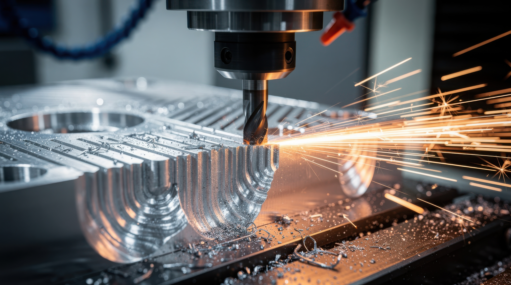

FACULTY: Class assignments requiring Shaper CNC should be coordinated by LAs, TAs, or instructors. (Questions: "zack.weaver@colorado.edu").
STUDENTS: Assistance with Shaper CNC for class assignments should be coordinated with class LAs or TAs first, then "BTU Mischief Makers", if available.
EVERYBODY: A brief training is required before using the Shaper CNC.
Thanks to generous support BTU purchased a Shaper Origin CNC router in 2026!
Basic operation of the Shaper can be found here:
The Shaper is a precision (expensive) tool!
Please contact Zack at zack.weaver@colorado.edu to get started.
Materials: BTU LAB IS NOT A FREE SUPPLY STORE. But there are many ways to barter, including displaying your work in BTU, tagging us in social media, offering workshops, volunteering to organize supplies, and more. If you need something, we ask that you give something in return.